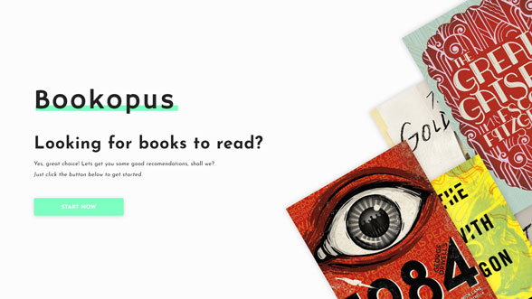
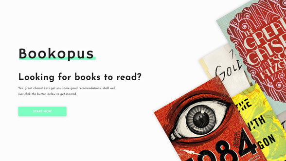

Bookopus gençlere yönelik, web tabanlı, kitap önerme servisidir.
rolüm: ux/ui design. | kişisel proje.
Sorun Durumu
Kitap önerileri genellikle kişisel deneyime göre yapılır. Ben bu kitabı beğendim, o halde bu kitap iyi… Fakat kitap önermek film önermek gibi değildir. Karşı tarafın beğenmeyeceği bir film önerdiğinizde kaybedeceği zaman en fazla 3-4 saatken, bir kitaba zamanının büyük bir bölümü ayırması gerekir. Hele ki bu insanın kitaplarla arası yoksa, bu büyük bir zaman kaybı olabilir ve onu kitaplardan tamamen soğutabilir. Zaten kitap okuyan birine, kitap önerebilirsiniz fakat, kitap okumayı isteyen ama o kadar zamanı pişman olacağı bir şeye ayırmak istemeyen birine?
Çözüm
Bu sorunu çözmek için kişilerin zevklerine göre kitap önermek, dolayısıyla da onları tanımak gerekti; hangi filmi seviyorlar, hangi tür oyunlar oynuyorlar? Milenyumluların ortak noktası olan popüler kültür öğelerinden yararlanarak, zevklerini belirlemeye ve buna uygun önerilerde bulunmaya karar verdim.

Araştırma
Bu servisi kullanacak hedef kitlenin, yaş ortalamaları ve kullanım alışkanlıklarına baktığımda, onları bu sitede uzun süre tutamayacağım fark ettim. Hiçbir şey için yeterli zamanları yok, kitaba başlamak için birçok form doldurmakla, hesap oluşturmakla uğraşamazlar. O halde servis, direkt ve hızlı sonuç veren bir yöntemde olmalıydı. Modern ve minimal bir tasarım izlemek gereklilikti. Bu bağlamda sitede olması gereken özellikleri belirledim.
Planlama
Bu ön hazırlığın ardından planma aşamasına geçtim. Belirlediğim özellikler kapsamında bir kullanıcı akışı belirledim.
Taslakları hazırlama aşamasında bu akışa bağlı kaldım.
Tasarım
Servisin özelliklerini belirledikten ve kağıt üzerinde gereklilikleri yerine getirebileceğini düşündüğüm bir taslağa sahip olduktan sonra, dijital tasarıma başlamak için bilgisayarın başına geçtim.


Taslakları dijital hale getirerek basit bir prototip oluşturdum.
Taslakları bitirmemin ardından Adobe XD programının sağladığı “Prototip” oluşturma menüsünden oluşturduğum prototipi hedef kitle içinde bulunan arkadaşlarıma denetme şansı buldum. Aldığım geri dönüşler çervesinde ve kullanıcıları gözlemlerken farkettiğim üzere tasarımda değişikliklere gittim. İlk görsel tasarımda kullandığım renklerin “markayı” yansıtmadığını ve yeterli kontrasta sahip olmadığını farketmemin ardından, marka rengini değiştirdim.


İlk değişikliklerden biri, tasarımın zayıf yönlerinden biri olan anasayfayı değiştirmek ve göze daha rahat gelen bir tasarıam geçmek oldu.
Tasarımın diğer bir zayıf yönü, yeterli kontrastı sağlayamamış olmam ve göze kılavuzluk etmekte başarıszlıktı. Bunu tasarımın tekrarında görerek düzelttim.
 

Aynı zamanda sarı rengin yeterli kontrastı yaratmadığına kanaat getirerek “marka” renginde de değişikliğe gittim.
Sonuç
Tasarım sürecinin sonunda, kodlama aşamasına geçmek için boş zaman kolluyorum. Projenin son halini açık kaynaj olarak github sayfamda bulabilirsiniz.